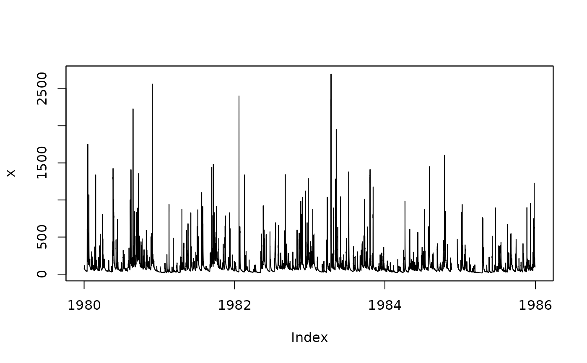

Sub-daily -> Daily
subdaily2daily.RdGeneric function for transforming a Sub-DAILY time series into a DAILY one
Usage
subdaily2daily(x, ...)
# Default S3 method
subdaily2daily(x, FUN, na.rm = TRUE, na.rm.max=0,
start="00:00:00", start.fmt= "%H:%M:%S", tz, ...)
# S3 method for class 'zoo'
subdaily2daily(x, FUN, na.rm = TRUE, na.rm.max=0,
start="00:00:00", start.fmt= "%H:%M:%S", tz, ...)
# S3 method for class 'data.frame'
subdaily2daily(x, FUN, na.rm = TRUE, na.rm.max=0,
start="00:00:00", start.fmt= "%H:%M:%S", tz,
dates=1, date.fmt="%Y-%m-%d %H:%M:%S", out.fmt="zoo",
verbose= TRUE, ...)
# S3 method for class 'matrix'
subdaily2daily(x, FUN, na.rm = TRUE, na.rm.max=0,
start="00:00:00", start.fmt= "%H:%M:%S", tz,
dates=1, date.fmt="%Y-%m-%d %H:%M:%S", out.fmt="zoo",
verbose= TRUE, ...)Arguments
- x
zoo, data.frame or matrix object, with sub-daily time series.
Measurements at several gauging stations can be stored in a data.frame or matrix object, and in that case, each column ofxrepresents the time series measured in each gauging station, and the column names ofxshould correspond to the ID of each station (starting by a letter).- FUN
Function that have to be applied for aggregating from sub-daily into daily time step (e.g., for precipitation
FUN=sumand for temperature and streamflows tsFUN=mean).FUNMUST accept thena.rmargument, becausena.rmis passed toFUN.- na.rm
Logical. Should missing values be removed?
-) TRUE : the daily values are computed only for days with a percentage of missing values less thanna.rm.max
-) FALSE: if there is AT LEAST one NA within a day, the corresponing daily value in the output object will beNA.- na.rm.max
Numeric in [0, 1]. It is used to define the maximum percentage of missing values allowed in each day to keep the daily aggregated value in the output object of this function. In other words, if the percentage of missing values in a given day is larger than
na.rm.maxthe corresponding daily value will beNA.- start
character, indicating the starting time used for aggregating sub-daily time series into daily ones. It MUST be provided in the format specified by
start.fmt.
This value is used to define the time when a new day begins (e.g., for some rain gauge stations).
-) All the values ofxwith a time attribute beforestartare considered as belonging to the day before the one indicated in the time attribute of those values.
-) All the values ofxwith a time attribute equal tostartare considered to be equal to"00:00:00"in the output zoo object.
-) All the values ofxwith a time attribute afterstartare considered as belonging to the same day as the one indicated in the time attribute of those values.It is useful when the daily values start at a time different from
"00:00:00". Use with caution. See examples.- start.fmt
character indicating the format in which the time is provided in
start, By defaultdate.fmt=%H:%M:%S. Seeformatinas.POSIXct.- tz
character, with the specification of the time zone used in both
xandstart. System-specific (see time zones), but""is the current time zone, and"GMT"is UTC (Universal Time, Coordinated). SeeSys.timezoneandas.POSIXct.
Iftzis missing (the default), it is automatically set to the time zone used intime(x).
This argument can be used to force using the local time zone or any other time zone instead of UTC as time zone.- dates
numeric, factor, POSIXct or POSIXt object indicating how to obtain the dates and times for each column of
x(e.g., gauging station)
Ifdatesis a number, it indicates the index of the column inxthat stores the date and times
Ifdatesis a factor, it is converted into POSIXct class, using the date format specified bydate.fmt
Ifdatesis already of POSIXct or POSIXt class, the code verifies that the number of elements on it be equal to the number of elements inx- date.fmt
character indicating the format in which the dates are stored in
dates, By defaultdate.fmt=%Y-%m-%d %H:%M:%S. Seeformatinas.Date.
ONLY required whenclass(dates)=="factor"orclass(dates)=="numeric".- out.fmt
OPTIONAL. Only used when
xis a matrix or data.frame object /cr character, for selecting if the result will be a matrix/data.frame or a zoo object. Valid values are: numeric, zoo (default)- verbose
logical; if TRUE, progress messages are printed
- ...
arguments additional to
na.rmpassed toFUN.
Details
This function assumes that x has a strictly regular time frequency (see is.regular) and raise a warning otherwise.
Author
Mauricio Zambrano-Bigiarini, mzb.devel@gmail
Examples
## Ex1: Computation of daily values, removing any missing value in 'x'
## Loading the time series of hourly streamflows for the station Karamea at Gorge
data(KarameaAtGorgeQts)
x <- KarameaAtGorgeQts
# Plotting the hourly streamflow values
plot(x)

# Subsetting 'x' to its first three days (01/Jan/1980 - 03/Jan/1980)
x <- window(x, end="1980-01-03 23:59:00")
## Transforming into NA the 10% of values in 'x'
set.seed(10) # for reproducible results
n <- length(x)
n.nas <- round(0.1*n, 0)
na.index <- sample(1:n, n.nas)
x[na.index] <- NA
## Agreggating from Sub-Daily to Daily, removing any missing value in 'x'
( d1 <- subdaily2daily(x, FUN=mean, na.rm=TRUE) )
#> 1979-12-31 1980-01-01 1980-01-02 1980-01-03
#> NA NA NA NA
## Ex2: Computation of daily values, removing any missing value in 'x' and
## considering that the new day starts at 08:00:00 local time
( d2 <- subdaily2daily(x, FUN=mean, na.rm=TRUE, start="08:00:00") )
#> 1979-12-31 1980-01-01 1980-01-02 1980-01-03
#> NA NA NA NA
## Ex3: Computation of daily values, removing any missing value in 'x' and
## considering that the new day starts at 08:00:00, and forcing
# UTC both for 'x' and 'start'
( d3 <- subdaily2daily(x, FUN=mean, na.rm=TRUE, start="08:00:00", tz="UTC") )
#> 1979-12-31 1980-01-01 1980-01-02 1980-01-03
#> NA NA NA NA
######################
## Ex4: Compuation of daily values only when the percentage of NAs in each
# day is lower than a user-defined percentage (10% in this example).
( d4 <- subdaily2daily(x, FUN=mean, na.rm=TRUE, na.rm.max=0.1) )
#> 1979-12-31 1980-01-01 1980-01-02 1980-01-03
#> NA 71.02727 101.02174 NA